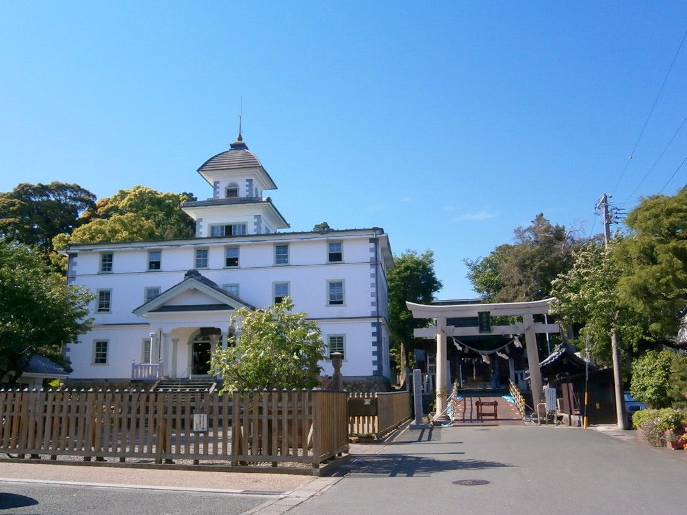

GALLERY ｜ 見どころ
色刷りの引札、見付を描いた浮世絵、絢爛な屋台の彫刻、祭りの絵葉書。一点ずつクリックすると、史料のページへ進みます。

このサイトについてABOUT
磐田物語は、静岡県磐田市に積み重ねられてきた歴史と文化を、一市民の視点で掘り起こし、書き留めていく場である。遠江国の国府が置かれ、東海道・見付宿として栄えたこの地には、古代の遺跡から宿場の面影、祭りや暮らしの記憶まで、語り継ぐべきものが数多く眠っている。
その中心に据えているのが、見付の旧家・佐口行正氏が守り伝えてきた史料コレクションである。郷土の史料と現地の風景をたどりながら、足もとの歴史を見つめ直し、次の世代へと手渡していくための覚え書きとして綴っていく。
ANCIENT IWATA
奈良時代、磐田は遠江国の中心だった。国府と国分寺が置かれ、台地には王たちの古墳が築かれた。まちの始まりの記憶をたどる。
TOKAIDO & ROADS
東海道五十三次の見付宿を中心に、姫街道・池田の渡し・掛塚湊、そして街道を舞台にした合戦まで。人と物が行き交った道の記憶。
中世から栄えた東海道屈指の宿場町。今に残る面影を旧東海道にたどる。
読む → 宿場本陣2・脇本陣1・旅籠56。東海道二十八番目の宿のにぎわい。
読む → 脇街道関所と今切の渡しを避けた人々が歩いた本坂通を、起点・見付からたどる。
読む → 渡し東海道の難所・天竜川の渡船。中世の池田荘から明治の架橋まで。
読む → 湊町天竜川河口に栄えた廻船の湊。材木を江戸へ運んだ繁栄の記憶。
読む → 代官所家康の中泉御殿と天領の代官所。名代官・林鶴梁や前島密の足跡。
読む → 合戦武田信玄の大軍を相手にした退き戦と「家康に過ぎたるもの」の落首。
読む →SHRINES & TEMPLES
国府の守り神から伊勢の御厨、国総社まで。まちの暮らしに根づいた信仰と、その由緒・祭礼をたどる。
HADAKA MATSURI ｜ 特集
漆黒の闇に渡る国指定重要無形民俗文化財。その全体像を、起源・神事・伝説・継承の四つの視点から、史実と伝承を分けて学術的にまとめた特集。
約8日間の祓いと清め、鬼踊り、闇の渡御。全体像をまとめた決定版資料。
読む → 起源勧請への歓喜説、悉平太郎説、谷部真吾の反閇説。起源の謎を検証する。
読む → 神事祭事始から堂入り・鬼踊り・闇の神輿渡御まで。四つの梯団と祭組を解説。
読む → 伝説光前寺の早太郎との異同、猿神退治譚の類型、表記の歴史的変遷を整理。
読む → 継承2000年の国指定、コロナ禍の縮小と再開、担い手不足という現代の課題。
読む → エッセイ天下の奇祭をめぐり、まちに受け継がれてきた祭りと暮らしの記憶をたどる。
読む →MODERN TOWN
学びのまち磐田を象徴する建物と、世界を見た人がこのまちに残した記憶。
PLACE NAMES & DIALECT
国・街道・信仰が名づけたまちの地名と、遠州のことば。辞典と変換ツールで、土地のことばに触れる。
CULTURAL PROPERTIES
磐田の文化財を、観光名所としてではなく「地域の記憶を読み解く手がかり」として整理する。一覧・データ・研究ノートの入口。
古墳・国分寺跡・旧街道・寺社・祭礼・学校から土地の歴史をたどる文化財群の入口。
開く → 一覧国・県・市・登録・無形民俗を横断検索。区分・時代・種別・キーワードで絞り込み。
さがす → 国指定遠江国分寺跡、銚子塚古墳、旧見付学校、見付天神裸祭ほか8件を読み解く。
読む → 埋蔵文化財土地を売る・買う・建てるとき、なぜ遺跡の確認が必要か。やさしく解説。
読む → 資料集いわた文化財だより、旧赤松家だより、文書館だよりなど、一次資料への入口。
開く → 研究ノート古いはがきの場所の特定、旧道との比較など、調査途中のメモを蓄積する場。
のぞく →SERIES
明治四十二年一月に調査された『見付町戸別明細圖』を一枚ずつ読み解きながら、見付という町に積み重なってきた土地と暮らしの記憶をたどる連載です。全五回。